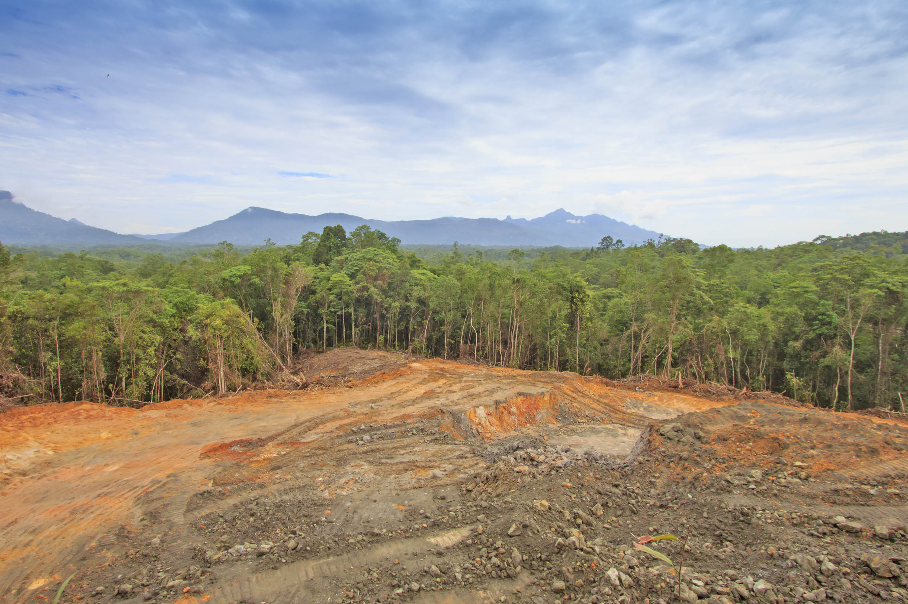

Causes of Changing Rainforests
Humans and problems caused by them can have extensive impacts on the surrounding environment.
 Image from ecosia
Some things that may cause other issues are:
• Overexploitation - Overexploitation is a huge issue that occurs when an area of land has been drained of all of it's natural resources, which can cause many other problems.
• Deforestation - Sometimes another form of overexploitation which happens when all of the trees in an area have been removed. This can be done to make clear land or can be done for timber and other things that trees provide.
• Pollution - Man-made places like factories and power plant can cause huge amounts of pollution, leading to worse climate change which can make fires more common, which causes it's more problems.